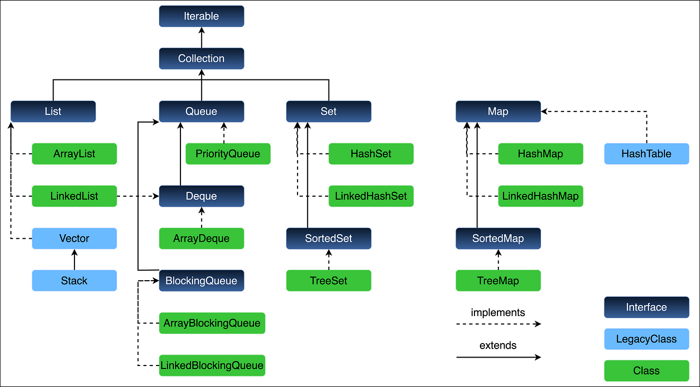

1. Java Collections Framework
2. Key Differences Between List and Set
| Feature | List | Set |
|---|---|---|
| Duplicates | Allowed | Not allowed |
| Ordering | Insertion order (unless sorted) | Unordered ( HashSet ), Sorted ( TreeSet ), or Insertion-order ( LinkedHashSet ) |
| Access Method | Index-based ( get(i) ) | No index access (must iterate) |
| Search Performance | O(n) (linear search) | O(1) ( HashSet ) or O(log n) ( TreeSet ) |
| Implementations | ArrayList, LinkedList, Vector | HashSet, LinkedHashSet, TreeSet |
| Primary Use Case | Ordered collections with duplicates | Unique elements, fast membership checks |
3. Comparison of List Implementations
| Feature | ArrayList | LinkedList | Vector | Stack (extends Vector) |
|---|---|---|---|---|
| Underlying Structure | Dynamic resizable array | Doubly-linked list | Dynamic array (legacy) | Dynamic array (legacy) |
| Thread Safety | No (Not synchronized) | No (Not synchronized) | Yes (All methods synchronized) | Yes (All methods synchronized) |
| Random Access (get(i)) | O(1) (Fast) | O(n) (Slow, traverses list) | O(1) (Fast, but slower due to sync) | O(1) (but slower due to sync) |
| Insertion (add) | O(n) worst-case (shifting) | O(1) (if known node) | O(n) (shifting + sync overhead) | O(n) (sync + shifting) |
| Deletion (remove) | O(n) worst-case (shifting) | O(1) (if known node) | O(n) (shifting + sync overhead) | O(n) (sync + shifting) |
| Memory Overhead | Low (contiguous memory) | High (extra pointers for nodes) | Low (like ArrayList but sync cost) | Low (like Vector) |
| Resizing | Grows by 50% (e.g., 10 ~ 15) | No resizing (dynamic node allocation) | Grows by 100% (e.g., 10 ~ 20) | Same as Vector |
| Null Elements | Allowed | Allowed | Allowed | Allowed |
| Duplicates | Allowed | Allowed | Allowed | Allowed |
| Iteration Order | Insertion order | Insertion order | Insertion order | Insertion order (LIFO for Stack) |
| Best Use Case | Frequent reads, fewer modifications | Frequent insertions/deletions | Legacy thread-safe needs | Legacy LIFO operations |
| Performance | Fast random access (0(1)) | Slow random access (0(n)) | Slower due to synchronization | Slower due to synchronization |
1. Detailed Breakdown
1.Insertion ( add(index, element) )
- At the START ( add(0, element) )
- ArrayList: O(n). It must shift every single existing element one position to the right to make room at index 0. This is very expensive for large lists.
- LinkedList: O(1). It simply creates a new node, points it to the old first node, and updates the head pointer. Extremely fast, constant time.
- Winner: LinkedList by a huge margin.
- In the MIDDLE ( add(n/2, element) )
- ArrayList: O(n). It must shift all elements from the insertion point to the end one position to the right.
- LinkedList: O(n). It must traverse the list from the start or end until it finds the insertion point (this is the O(n) part). However, once found, the actual insertion (changing pointers) is O(1).
- Winner: Technically a Tie, but ArrayList often wins in practice. Why? Traversing in a LinkedList involves pointer chasing, which is slow due to non-contiguous memory locations (cache misses). Shifting elements in an ArrayList is a very fast, contiguous block memory copy.
- At the END ( add(element) )
- ArrayList: O(1) amortized. Usually, it just plops the element into the next empty slot. Occasionally, when the internal array is full, it triggers a new array creation and copy, which is O(n). But averaged over many insertions, this is effectively constant time.
- LinkedList: O(1). It has a direct reference to the tail node, so it just adds a new node after it and updates the tail pointer.
- Winner: Tie. Both are very fast for appending.
2. Removal ( remove(index) )
- From the START ( remove(0) )
- ArrayList: O(n). It must shift all remaining elements one position to the left to fill the gap.
- LinkedList: O(1). It simply updates the head pointer to point to the second node and severs the link from the old head.
- Winner: LinkedList by a huge margin.
- From the MIDDLE ( remove(n/2) )
- ArrayList: O(n). It must shift all elements after the removal point one position to the left.
- LinkedList: O(n). It must traverse to the node to be removed (O(n)), but the actual removal (bypassing the node) is O(1).
- Winner: Technically a Tie, but ArrayList often wins in practice for the same reason as insertion: fast block copy vs. slow traversal.
- From the END ( remove(lastIndex) )
- ArrayList: O(1). It can simply decrement its size counter. No shifting is needed.
- LinkedList: O(1). It has a direct tail pointer. To remove the tail, it must update the tail to point to the previous node. This is O(1) because it's a doubly-linked list and the tail node has a pointer to its previous node.
- Winner: Tie, though ArrayList is often a fraction faster as it's a simpler operation.
5. Search / Access ( get(index) )
- By Index ( get(index) )
- ArrayList: O(1). This is its superpower. It performs a simple array lookup: internalArray[index].
- LinkedList: O(n). It has to start from the head (or tail if the index is in the second half) and traverse node-by-node until it reaches the desired position. This is painfully slow for random access.
- Winner: ArrayList by a universe-sized margin.
- By Value ( indexOf(element) / contains(element) )
- Both: O(n). Both must iterate through each element until they find a match (.equals() ). There is no inherent advantage for either.
- Winner: Tie.
2. ArrayList Internal Structure
Default Size and Creation
The behavior depends on which constructor you use:
1. new ArrayList<>() (Default Constructor)
In Java 21, the default constructor does not immediately create a 10-element array. It uses a lazy initialization optimization.
The internal storage is set to a shared, static, empty array
( DEFAULTCAPACITY_EMPTY_ELEMENTDATA ).
The first time an element is added to the list, the internal array is created with the default capacity of 10.
Why? This optimizes memory usage for potentially empty or short-lived ArrayLists.
2. new ArrayList<>(int initialCapacity)
This constructor immediately creates an internal array of the specified size
( initialCapacity ).
If initialCapacity is 0, it uses a shared static empty array.
3. new ArrayList<>(Collection<? extends E> c)
The internal array is created immediately with a size equal to the size of the passed collection ( C.size() ).
The elements from the collection are copied into this new array.
Internal Structure & Growth
The core internal structure remains a dynamic array, but Java 21 includes optimizations.
1 // Simplified view based on Java 21 source code
2 public class ArrayList<E> extends AbstractList<E> implements List<E> {
3 // The internal storage. Can be one of several shared empty arrays for optimization.
4 transient Object[] elementData;
5 // The number of elements currently in the list (not the array length!)
6 private int size;
7 // Default constructor: LAZY INITIALIZATION
8 public ArrayList() {
9 this.elementData = DEFAULTCAPACITY_EMPTY_ELEMENTDATA; // Shared empty array
10 this.size = 0;
11 }
12 // The first add(E e) operation triggers this:
13 private Object[] grow(int minCapacity) {
14 int oldCapacity = elementData.length;
15 if (oldCapacity > 0 || elementData != DEFAULTCAPACITY_EMPTY_ELEMENTDATA) {
16 // Standard growth: 50% larger (oldCapacity >> 1 is oldCapacity / 2)
17 int newCapacity = ArraysSupport.newLength(oldCapacity,
18 minCapacity - oldCapacity, // minimum growth
19 oldCapacity >> 1); // preferred growth (50%)
return elementData = Arrays.copyOf(elementData, newCapacity);
} else {
// This is the first add to a default-constructed ArrayList
// Creates the array with max(DEFAULT_CAPACITY=10, minCapacity)
return elementData = new Object[Math.max(DEFAULT_CAPACITY, minCapacity)];
Key Java 21 Insight: The growth logic now uses ArraysSupport.newLength, which provides more controlled and optimized calculation for the new array size, but the standard growth factor remains ~1.5x.
The Growth Process (Dynamic Resizing)
This is the most important concept. When the array is full (size == capacity) and a new element needs to be added:
1. A new, larger array is created. The standard growth factor in Java's ArrayList is 1.5x (i.e., the new capacity is oldCapacity + (oldCapacity >> 1) ).
2. All elements from the old array are copied into the new array using Arrays.copyOf .
3. The old array is discarded, and the elementData reference is updated to point to the new array.
4. The new element is added to the new array.
Example of Growth:
• Initial capacity: 10
• On the 11th add: New capacity = 10 + (10 >> 1) = 10 + 5 = 15
• On the 16th add: New capacity = 15 + (15 >> 1) = 15 + 7 = 22
• This amortizes the cost of the expensive O(n) copy operation over many fast O(1) adds, leading to an "amortized constant time" cost for adding at the end.
3. LinkedList Internal Structure
Default Size and Creation
• LinkedList has no capacity concept. Its size is always exactly the number of elements it contains.
• The default constructor new LinkedList<>() creates an empty list. The first and last node references are set to null, and the size is 0.
- There is no lazy initialization. The structure is created immediately, but it's just the shell of the list with no nodes.
Internal Structure
A LinkedList is a doubly-linked list. It is built from Node objects (often a private inner class). Each Node contains three things:
1. E item: The actual data element.
2. Node<E> next: A reference to the next node in the sequence.
3. Node<E> prev: A reference to the previous node in the sequence.
The LinkedList class itself maintains two references:
1. Node<E> first: A pointer to the first node in the list.
2. Node<E> last: A pointer to the last node in the list.
3. int size: The number of elements in the list.
1 // Simplified view of LinkedList and its Node
2 public class LinkedList<E> {
transient Node<E> first;
transient Node<E> last;
private int size;
private static class Node<E> {
E item;
Node<E> next;
Node<E> prev;
Node(Node<E> prev, E element, Node<E> next) {
this.item = element;
this.next = next;
this.prev = prev;
}
}
// Default constructor
17 public LinkedList() {
this.first = null;
19 this.last = null;
20 this.size = 0;
21 }
22 }
The Growth Process
Adding an element is simple and doesn't involve any copying:
1. A new Node object is created.
2. The next and prev pointers of the new node and the existing last node are updated to link it into the chain.
3. The last pointer of the list is updated to point to the new node.
4. The size is incremented by 1.
There is no "resizing" event. Each addition is a standalone O(1) operation (assuming you are adding at the end and have the tail pointer).
3. ArrayList vs SynchronizedList vs CopyOnWriteArrayList
Key Differences Explained
1. Thread Safety
• ArrayList :
• Not thread-safe. Concurrent modifications (e.g., one thread adding while another reads) can cause:
• ConcurrentModificationException (during iteration).
• Data corruption (e.g., lost updates).
• Requires explicit synchronization:
1 List<String> syncList = Collections.synchronizedList(new ArrayList<>());
• CopyOnWriteArrayList :
• Thread-safe by design:
• Reads are lock-free (always work on an immutable snapshot).
• Writes ( add , set , remove ) create a new copy of the underlying array, ensuring thread safety at the cost of performance.
4. Comparison of Set Implementations
| Feature | HashSet | LinkedHashSet | TreeSet | EnumSet | CopyOnWriteArraySet |
|---|---|---|---|---|---|
| Underlying Structure | Hash table (HashMap backing) | HashSet + Linked List for order | Red-Black Tree (TreeMap) | Bit vector (optimized for enums) | Copy-on-write array |
| Thread Safety | No | No | No | No | Yes (thread-safe) |
| Performance | 0(1) avg. for insert/delete | 0(1) avg., slightly slower than HashSet | 0(log n) for operations | 0(1) (fastest for enums) | Slow writes (0(n)), fast reads |
| Add/Remove Performance | O(1) average | O(1) (slightly slower than HashSet ) | O(log n) (tree balancing) | O(1) (fastest for enums) | O(n) (due to array copying) |
| Contains (search) | O(1) average | O(1) average | O(log n) | O(1) | O(n) (linear scan) |
| Null Elements | Yes (1 null allowed) | Yes (1 null allowed) | No (if natural ordering used) | No (enum only) | Yes |
| Duplicates | No | No | No | No | No |
| Iteration Order | Unordered | Insertion order | Sorted (natural/comparator order) | Natural enum order | Insertion order |
| Memory Overhead | Moderate (hash table + load factor) | Higher (maintains linked list) | High (tree nodes + balancing) | Very low (bit flags) | High (copies array on mutation) |
| Best Use Case | Fastest general-purpose set | Insertion-order preservation | Sorted unique elements | High-performance enum collections | Thread-safe, read-heavy scenarios |
1. How Does a Set Maintain Unique Elements?
The core mechanism is delegated to the underlying Map. All standard Set implementations use a Map internally.
The Golden Rule: In a Map, every key must be unique. A Set cleverly uses this property by storing its elements as keys in the map, with a dummy object as the value.
Here's the internal trick, common to HashSet, LinkedHashSet, and TreeSet :
1 // Simplified view of how HashSet (and others) are built
2 public class HashSet<E> {
3 // Backing Map - The real data structure
4 private transient HashMap<E, Object> map;
5 // A single, static dummy object to use as the value for every key
6 private static final Object PRESENT = new Object();
7 public boolean add(E e) {
// The magic happens in map.put(key, value):
// 1. It calculates the hash of the key 'e'.
// 2. It checks if a key that is "equal" to 'e' already exists.
// 3. If it does NOT exist, it adds the entry (e -> PRESENT) and returns null.
// 4. If it DOES exist, it replaces the value for that key and returns the old
value.
return map.put(e, PRESENT) == null;
The put method's logic (for HashMap / HashSet ) is key to uniqueness:
1. Hash & Bucket: It calculates the hash code of the new element ( e ) to find its "bucket".
2. Check for Equality: Within that bucket, it checks if any existing key k meets the condition:
(e == null ? k == null : e.equals(k) ).
3. Decision:
- If e.equals(k) is true for an existing key, the element is a duplicate. The put method returns the old value (which is PRESENT ), so add() returns false .
- If no equal key is found, the new element is unique. The put method adds the new entry and returns null , so add() returns true .
In short: Uniqueness is enforced by the equals() and hashCode() methods of the objects you add to the set. This is why it's critical to correctly override these methods for your custom classes.
2. How Does LinkedHashSet Maintain Insertion Order?
LinkedHashSet is a subclass of HashSet . While HashSet uses a HashMap internally, LinkedHashSet uses a LinkedHashMap .
A LinkedHashMap extends HashMap by adding a doubly-linked list that runs through all of its entries. This linked list defines the iteration order.
Internal Structure of LinkedHashMap (and thus LinkedHashSet):
1 // Simplified view of the internal Node in LinkedHashMap
2 static class Entry<K,V> extends HashMap.Node<K,V> {
// These fields add the linking functionality
Entry<K,V> before, after; // Pointers to the previous and next node in the linked list
Entry(int hash, K key, V value, Node<K,V> next) {
super(hash, key, value, next);
}
}
9 // The LinkedHashMap class maintains the head and tail of this linked list
10 transient LinkedHashMap.Entry<K,V> head;
11 transient LinkedHashMap.Entry<K,V> tail;
The Process for add() (e.g., LinkedHashSet.add("Alice"));
1. Hash Table Operation: Exactly like a HashSet, it uses the hash table to check for uniqueness and find the correct bucket.
2. Linking: Once the new entry is placed in the hash table, the LinkedHashMap appends it to the end of its internal doubly-linked list.
The new entry's before pointer is set to the current tail.
The current tail's after pointer is set to the new entry.
The tail pointer is updated to point to the new entry.
Iteration: When you iterate over a LinkedHashSet (e.g., with a for-each loop), it doesn't iterate through the hash table buckets. Instead, it simply traverses this internal linked list from head to tail, which guarantees insertion-order.
3. Default Capacity and Growth (LinkedHashSet & HashSet)
Since LinkedHashSet is built on a LinkedHashMap, which is built on a HashMap, their capacity and growth behavior are identical.
- Default Initial Capacity: 16 (of the underlying hash table).
- Load Factor: 0.75.
- Growth Trigger: When the number of elements exceeds (capacity * load factor).
- Growth Mechanism: The hash table doubles in size (i.e., new capacity = old capacity * 2). All existing entries are rehashed and placed into new buckets in the larger table. The LinkedHashMap also maintains the linked list order during this process.
Example: The default capacity is 16 and load factor is 0.75. The set will grow when you add the 13th element (because 16 * 0.75 = 12). The new capacity will be 32.
5. Comparison of Map Implementations in Java
| Feature | HashMap | LinkedHashMap | TreeMap | HashTable (Legacy) | Concurrent HashMap | EnumMap | IdentityHashMap |
|---|---|---|---|---|---|---|---|
| Underlying Structure | Hash Table (Array + LinkedList / RB Tree in Java 8+) | Hash Table + Linked List | Red-Black Tree (Balanced BST) | Hash Table (Synchronized) | Segmented Hash Table (Lock Stripping) | Bit Array (Optimized for Enums) | Hash Table (Uses == for equality) |
| Thread Safety | ✅ No | ✅ No | ✅ No | ✅ Yes (Synchronized methods) | ✅ Yes (Lock per Segment) | ✅ No | ✅ No |
| Null Keys/Values | ✅ 1 null key, multiple null values | ✅ 1 null key, multiple null values | ✅ No (if natural ordering) | ✅ No (throws NullPointerException) | ✅ No (since Java 8) | ✅ null allowed (if enum allows) | ✅ Allows null |
| Ordering | ✗ Unordered | ✔ Insertion Order / Access Order (LRU) | ✔ Sorted (Natural/Comparator) | ✗ Unordered | ✗ Unordered | ✔ Natural Enum Order | ✗ Unordered |
| Performance (get/put) | O(1) avg. (Worst: O(n) if many collisions) | O(1) (Slightly slower than HashMap ) | O(log n) (Tree operations) | O(1) (Slower due to sync) | O(1) (High concurrency) | O(1) (Fast for enums) | O(1) (Unless System.identityHashCode used) |
| Iteration Speed | Fast (but unordered) | Slower (maintains linked list) | Slow (tree traversal) | Slow (sync overhead) | Fast (optimized for concurrency) | Fast (like HashMap ) | Fast |
| Duplicates | ✗ Keys must be unique | ✗ Keys must be unique | ✗ Keys must be unique | ✗ Keys must be unique | ✗ Keys must be unique | ✗ Keys must be unique | ✗ Keys must be unique |
| Use Case | General-purpose, fastest lookups | Preserve insertion/access order | Sorted key ordering | Legacy thread-safe needs | High-concurrency scenarios | Enum key collections | Reference equality needed |
6. Hashtable vs. SynchronizedMap vs. ConcurrentHashMap
| Feature | Hashtable (Legacy) | Collections.synchronizedMap() | ConcurrentHashMap (Modern) |
|---|---|---|---|
| Thread Safety | ✔ Yes (All methods synchronized) | ✔ Yes (Wrapper with synchronized blocks) | ✔ Yes (Lock striping, partial sync) |
| Locking Mechanism | Global lock (entire map locked) | Global lock (entire map locked) | Segment-level locks (only parts locked) |
| Performance | 🟧 Slow (High contention) | 🟧 Slow (High contention) | 🟧 Fast (Low contention, higher throughput) |
| Null Keys/Values | ✗ No (NullPointerException ) | ✗ Depends on wrapped map (e.g., HashMap allows null) | ✗ No (since Java 8) |
| Iterator Behavior | Fail-safe (throws ConcurrentModificationException) | Fail-fast (throws ConcurrentModificationException) | Weakly consistent (no exceptions) |
| Concurrency Level | 1 (Single lock) | 1 (Single lock) | Configurable (Default: 16 segments) |
| Introduced In | Java 1.0 | Java 1.2 | Java 5 (JSR 166) |
| Use Case | Legacy code | Simple thread-safe wrapper for existing maps | High-concurrency applications |
Key Differences Explained
1. Thread Safety Mechanism
Hashtable:
- Uses synchronized methods (e.g., put() , get() ), locking the entire map for every operation.
- Example:
public synchronized V put(K key, V value) { ... }
- Collections.synchronizedMap():
Wraps any Map (e.g., HashMap ) with synchronized blocks, locking the entire map.
- Example:
Map<K, V> syncMap = Collections.synchronizedMap(new HashMap<>());
- ConcurrentHashMap:
Uses lock striping (multiple locks for different segments).
Only a segment (bucket) is locked during writes, allowing concurrent reads.
2. Performance
| Scenario | Hashtable | SynchronizedMap | ConcurrentHashMap |
|---|---|---|---|
| Single Thread | Slow (legacy) | Slow (sync overhead) | Fast (near HashMap ) |
| High Contention | Very Slow | Very Slow | Optimal (scales well) |
| Read-Heavy | Slow | Slow | Blazing Fast (no locks on reads) |
3. Null Support
- Hashtable: Prohibits null keys/values (throws NullPointerException).
- SynchronizedMap: Inherits behavior from the wrapped map (e.g., HashMap allows null).
- ConcurrentHashMap: Does not allow null keys/values (design choice to avoid ambiguity).
4. Iteration Behavior
- Hashtable & SynchronizedMap:
- Fail-fast iterators (throw ConcurrentModificationException if modified during iteration).
- ConcurrentHashMap:
- Weakly consistent iterators (reflects state at some point during iteration; no exceptions).
5. When to Use Which?
| Use Case | Best Choice |
|---|---|
| Legacy code maintenance | Hashtable (but prefer alternatives) |
| Simple thread-safe wrapper | Collections.synchronizedMap( ) |
| High-concurrency, low-latency systems | ConcurrentHashMap |
| Read-heavy applications | ConcurrentHashMap |